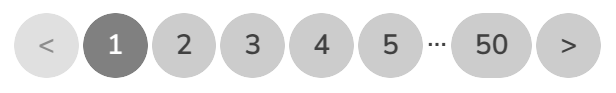
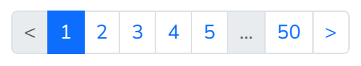

series_nav


series_nav returns an HTML string containing pagination links, wrapped in a nav tag, ready to be used in your view.
It works with all paginators but :keyset
<%== @pagy.series_nav(**options) %> <%# default pagy style %>
<%== @pagy.series_nav(:bootstrap, **options) %>
<%== @pagy.series_nav(:bulma, **options) %>Console
require 'pagy/console'
=> true
>> @pagy, @records = pagy(:offset, collection.new, page: 3)
=> [#<Pagy::Offset:0x00007f6b44bf36f8 @count=1000, @from=41, @in=20, @in_range=true, @last=50, @limit=20, @next=4, @offset=40, @options={limit: 20, limit_key: "limit", page_key: "page", page: 3, count: 1000}, @page=3, @previous=2, @request=#<Pagy::Request:0x00007f6b4525f320 @base_url="http://www.example.com", @cookie=nil, @jsonapi=nil, @path="/path", @params={example: "123"}>, @to=60>, [41, 42, 43, 44, 45, 46, 47, 48, 49, 50, 51, 52, 53, 54, 55, 56, 57, 58, 59, 60]]
>> puts @pagy.series_nav
<nav class="pagy series-nav" aria-label="Pages"><a href="/path?example=123&page=2" rel="prev" aria-label="Previous"><</a><a href="/path?example=123&page=1">1</a><a href="/path?example=123&page=2" rel="prev">2</a><a role="link" aria-disabled="true" aria-current="page">3</a><a href="/path?example=123&page=4" rel="next">4</a><a href="/path?example=123&page=5">5</a><a role="separator" aria-disabled="true">…</a><a href="/path?example=123&page=50">50</a><a href="/path?example=123&page=4" rel="next" aria-label="Next">></a></nav>
=> nil
>> puts @pagy.series_nav(:bulma, id: 'my-nav', aria_label: 'Products', slots: 3)
<nav id="my-nav" class="pagy-bulma series-nav pagination" aria-label="Products"><ul class="pagination-list"><li><a href="/path?example=123&page=2" class="pagination-previous" rel="prev" aria-label="Previous"><</a></li><li><a href="/path?example=123&page=2" class="pagination-link" rel="prev">2</a></li><li><a role="link" class="pagination-link is-current" aria-current="page" aria-disabled="true">3</a></li><li><a href="/path?example=123&page=4" class="pagination-link" rel="next">4</a></li><li><a href="/path?example=123&page=4" class="pagination-next" rel="next" aria-label="Next">></a></li></ul></nav>
=> nil:pagy/nil- Pagy default style
:bootstrap- Set
classes: 'pagination pagination-sm any-class'style option to override the default'pagination'class. :bulma- Set
classes: 'pagination is-small any-class'style option to override the default'pagination'classes.
slots: 9Override the default number of page
:slotsused for the navigation bar.slots < 7causes the slots to be filled by contiguous pages around the current oneslots >= 7causes the first and last slots to be occupied by first and last pages, separated by the rest with a...(:gap) slot when needed.- Prefer odd numbers of slots, which determine the current page to be in the central slot.
compact: true- Fill all the slots with contiguous pages, regardless the number of slots.
id: 'my-nav'- Set the
idHTML attribute of thenavtag. aria_label: 'My Label'Override the default
pagy.aria_label.navstring of thearia-labelattribute.
See ARIAThe
navelements arelandmark roles, and should be distinctly labeled!Override the default
:aria_labels for multiple navs with distinct values!<%# Explicitly set the aria_label %> <%== @pagy.series_nav(aria_label: 'Search result pages') %>anchor_string: 'data-turbo-frame="paginate"'- Concatenate a verbatim raw string to the internal HTML of the anchor tags. It must contain properly formatted HTML attributes. It's not suitable for
*_hashhelpers. absolute: true- Makes the URL absolute.
path: '/my_path'- Overrides the request path in pagination URLs. Use the path only (not the absolute URL). (see Override the request path)
fragment: '...'- URL fragment string.
querify: tweakSet it to a
Lambdato directly edit the passed string-keyed params hash itself. Its result is ignored.tweak = ->(q) { q.except!('not_useful').merge!('custom' => 'useful') }